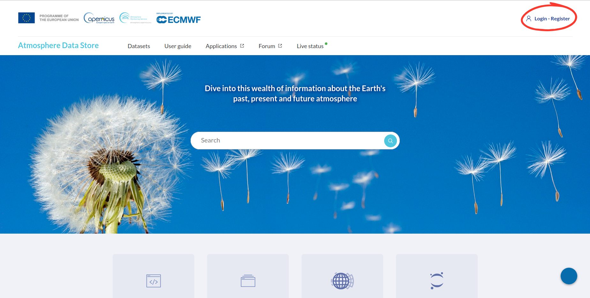
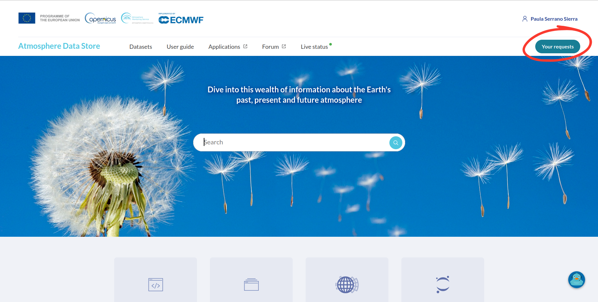
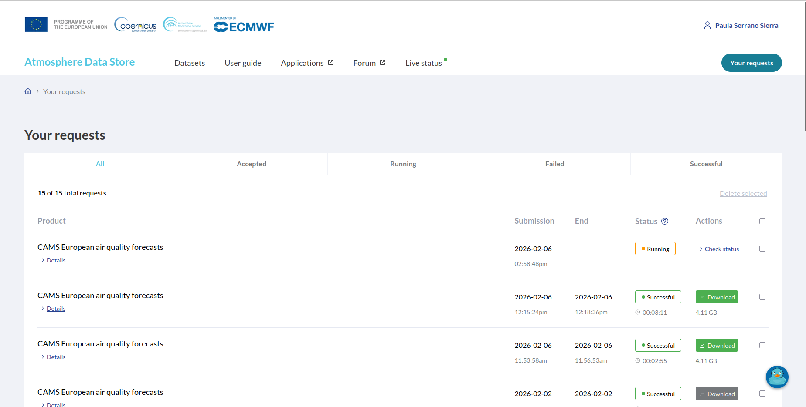
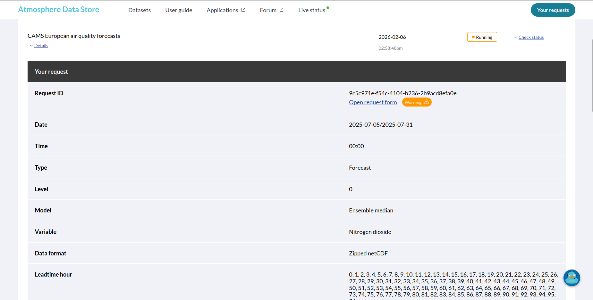

Check ECMWF Download Status
To check the status of a CAMS or ERA5 data download, access the Copernicus Atmosphere Data Store (ADS) or Copernicus Climate Data Store (CDS) website.
1. Access the ADS or CDS Website
Depending on the source of your download, go to one of the following websites:
2. Log In
Log in using the account you previously created (see: Start downloading ECMWF data).

3. Open Your Requests
Once logged in, click on Your Requests in the top menu.

4. Check Request Status
In the Your Requests page, you will see a list of your recent data requests.
If the request is still being processed, its status will appear as Running.
Completed requests will show a Successful status.

5. View Request Details
Click on Details for a specific request to see additional information, such as:
Request ID
Date
Time
Type
Level
Model
Variable
Data format
Leadtime hour
